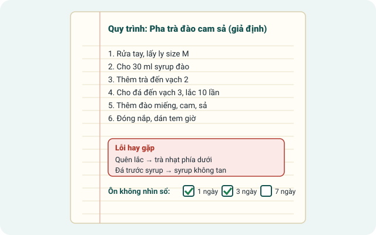

K7 · Tự học và phát triển nghề nghiệp › Bậc 2 Bắt đầu
Học nhanh việc mới bằng cách xem, làm thử, tự ghi quy trình và tự kiểm tra
Bài này làm Tờ 6: Sổ quy trình. Mẫu in.
1. Mục tiêu
- Ghi một quy trình mới bằng lời của mình, gồm các bước và lỗi hay gặp.
- Tự kiểm tra quy trình không nhìn sổ, theo lịch ôn sau 1, 3 và 7 ngày.
2. Khởi động truy xuất
- Câu hỏi nào nên hỏi ngay, câu nào nên ghi vào sổ để hỏi sau?
- Tin nhắn công việc gồm 4 ý nào?
Đáp án
- Hỏi ngay câu gấp, ảnh hưởng khách hoặc an toàn. Câu không gấp ghi vào sổ, hỏi gộp lúc người hướng dẫn rảnh.
- Chào và tên; việc gì; cần gì; cảm ơn.
Xem lại: Giao tiếp tuần đầu.
3. Giải thích
Ở chỗ làm mới, bạn thường được chỉ một lần rồi tự làm. Người học nhanh không phải người nhớ giỏi bẩm sinh. Họ dùng cách học đúng.
Cách học nào hiệu quả? Một tổng quan nghiên cứu lớn (Dunlosky và cộng sự, 2013) xếp hai cách lên đầu. Đó là tự kiểm tra (tự nhớ lại không nhìn tài liệu) và ôn giãn cách (ôn rải ra nhiều ngày). Đọc lại và tô đậm thì hiệu quả thấp.
Vòng 4 bước khi học một việc mới:
Vòng học việc mới
- Xem làm mẫuHỏi "vì sao bước này?" khi chưa hiểu.
- Làm thửLàm khi người hướng dẫn còn đứng cạnh.
- Tự ghi quy trìnhViết bằng lời của mình, ngay sau ca.
- Tự kiểm traNhớ lại không nhìn sổ, rồi so.
Trang quy trình có 3 phần:
- Các bước đánh số. Ghi con số cụ thể: bao nhiêu ml, bao nhiêu phút, vạch nào.
- Lỗi hay gặp và hậu quả. Hỏi người hướng dẫn: "Người mới hay sai ở bước nào ạ?"
- Ô ôn lại sau 1, 3 và 7 ngày.

Cách tự kiểm tra. Úp sổ xuống. Viết hoặc nói lại các bước. Lật sổ ra so. Bước nào sai thì khoanh lại, lần ôn sau chú ý bước đó.
Vì sao viết bằng lời của mình? Chụp ảnh tài liệu thì nhanh, nhưng bạn chưa phải nhớ gì. Tự viết buộc bạn nhớ lại, và lộ ra chỗ mình chưa hiểu.
Quy trình có liên quan an toàn hay tiền bạc thì đừng chỉ dựa vào trí nhớ. Hãy làm theo bảng hướng dẫn của chỗ làm.
4. Ví dụ tại nơi làm việc Việt Nam
Tình huống giả định. Linh làm thêm ở một tiệm trà sữa tại Cần Thơ. Ngày đầu, chị quản lý chỉ Linh pha 5 món bán chạy.
Sau ca, Linh ngồi 10 phút viết 5 trang quy trình. Món trà đào cam sả có 6 bước và 2 lỗi hay gặp, như Hình 1.
Ngày hôm sau, trước ca, Linh úp sổ và viết lại 5 món. Linh sai lượng syrup món trà vải. Linh khoanh bước đó lại.
Ngày thứ 3 và thứ 7, Linh tự kiểm tra lại. Đến ngày thứ 7, Linh nhớ đủ 5 món. Linh xin chị quản lý chỉ thêm 3 món mới.
Vì sao cách này tốt: Linh không đọc lại sổ nhiều lần. Linh nhớ lại rồi so, nên biết chính xác bước nào còn yếu. Lịch 1–3–7 ngày rải việc ôn ra, mỗi lần chỉ vài phút.
5. Thực hành
Tình huống giả định. Bạn thực tập ở phòng hành chính một công ty tại Hà Nội. Chị hướng dẫn chỉ cách nhập hóa đơn vào bảng tính: mở file tháng, thêm dòng mới, nhập ngày, số hóa đơn, nhà cung cấp, số tiền. Lưu file với tên có ngày. Chị nhắc: người mới hay nhập số tiền có dấu chấm, làm công thức tổng bị lỗi.
Viết một trang Sổ quy trình cho việc này. Lên lịch ôn.
Gợi ý 1
Tách từng thao tác thành một bước có số thứ tự. Ghi rõ tên cột cần nhập.
Gợi ý 2
Phần lỗi hay gặp đã có trong đề. Ghi cả lỗi và hậu quả của nó.
Lời giải mẫu
Quy trình: Nhập hóa đơn vào bảng tính
- Mở file của tháng hiện tại trong thư mục chung.
- Thêm một dòng mới dưới dòng cuối.
- Nhập 4 cột: ngày, số hóa đơn, nhà cung cấp, số tiền.
- Số tiền chỉ nhập chữ số, không dấu chấm.
- Kiểm tra ô tổng cuối bảng có cập nhật.
- Lưu file, tên dạng "HoaDon_2026-11_ngay14".
Lỗi hay gặp: nhập số tiền có dấu chấm → công thức tổng bị lỗi.
Ôn không nhìn sổ: sau 1 ngày, 3 ngày, 7 ngày.
(Quy trình là giả định để minh họa.)
6. Tự kiểm tra
Chọn đáp án. Mỗi lựa chọn đều có giải thích.
Câu 1. Bạn vừa được chỉ cách đóng gói đơn hàng online. Cách học nào hiệu quả nhất?
-
Chưa đúng. Đọc lại có hiệu quả thấp vì bạn không phải nhớ lại gì.
-
Đúng. Đúng. Đây là tự kiểm tra, cách học được nghiên cứu xếp hiệu quả cao.
-
Chưa đúng. Tô đậm có hiệu quả thấp theo Dunlosky và cộng sự (2013).
Câu 2. Lịch ôn nào là ôn giãn cách?
-
Chưa đúng. Ôn dồn một lúc giúp nhớ ngắn hạn, nhưng dễ quên sau vài ngày.
-
Đúng. Đúng. Rải lần ôn ra nhiều ngày giúp nhớ lâu hơn.
-
Chưa đúng. Như vậy bạn học sau khi đã gây lỗi.
Câu 3. Khi người hướng dẫn làm mẫu, câu hỏi nào giúp bạn ghi phần "Lỗi hay gặp"?
-
Đúng. Đúng. Biết trước lỗi hay gặp giúp bạn tránh được ngay từ đầu.
-
Chưa đúng. Câu trả lời thường chung chung, không giúp ghi lỗi cụ thể.
-
Chưa đúng. Câu này không giúp bạn học việc. Quy định lương nên hỏi riêng.
Câu 4. Khi tự kiểm tra, bạn viết sai bước 3. Bạn nên làm gì?
-
Chưa đúng. Bỏ lỡ thông tin quan trọng về chỗ mình còn yếu.
-
Đúng. Đúng. Biết chính xác chỗ sai là lợi ích lớn của tự kiểm tra.
-
Chưa đúng. Sai khi tự kiểm tra là bình thường và có ích, không phải dấu hiệu nên dừng.
7. Phản tư
- Việc gần nhất bạn phải hỏi lại người khác là việc gì? Bước nào bạn quên?
- Bạn có đang học bằng cách đọc lại không? Bạn sẽ đổi sang tự kiểm tra thế nào?
8. Áp dụng thật
Trong 7 ngày tới, chọn một việc mới ở trường, ở nhà hay chỗ làm thêm. Viết một trang quy trình vào Tờ 6. Tự kiểm tra sau 1 ngày và 3 ngày. Đặt nhắc lịch cho lần ôn thứ 7.
9. Siêu dữ liệu
| skill | K7 · Tự học và phát triển nghề nghiệp |
|---|---|
| level | Bậc 2 · Bắt đầu |
| group | N2 |
| framework_map | WEF: Curiosity and lifelong learning; SkillsFuture CCS: Learning Agility; NACE: Career and Self-Development; LifeComp: L3 Managing learning (chỉ dẫn chiếu) |
| updated | 2026-11-14 |
Hoàn thành bài
Đánh dấu đã học để site gợi ý lịch ôn sau 1, 3 và 7 ngày. Dữ liệu chỉ lưu trên máy của bạn.
Lịch ôn gợi ý: